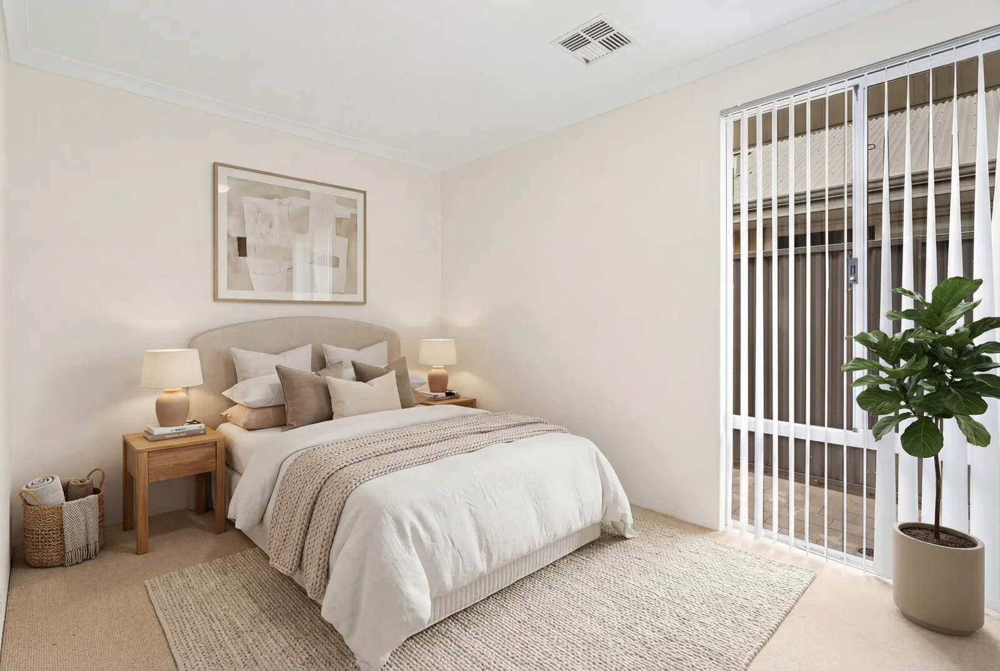
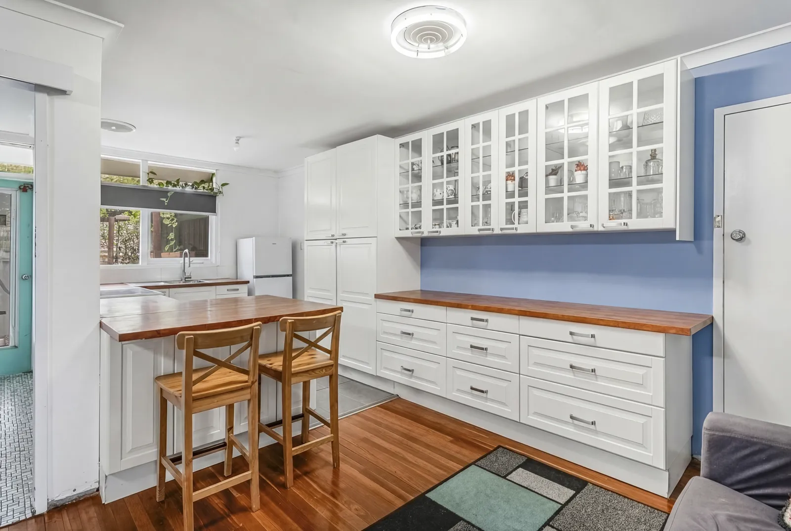
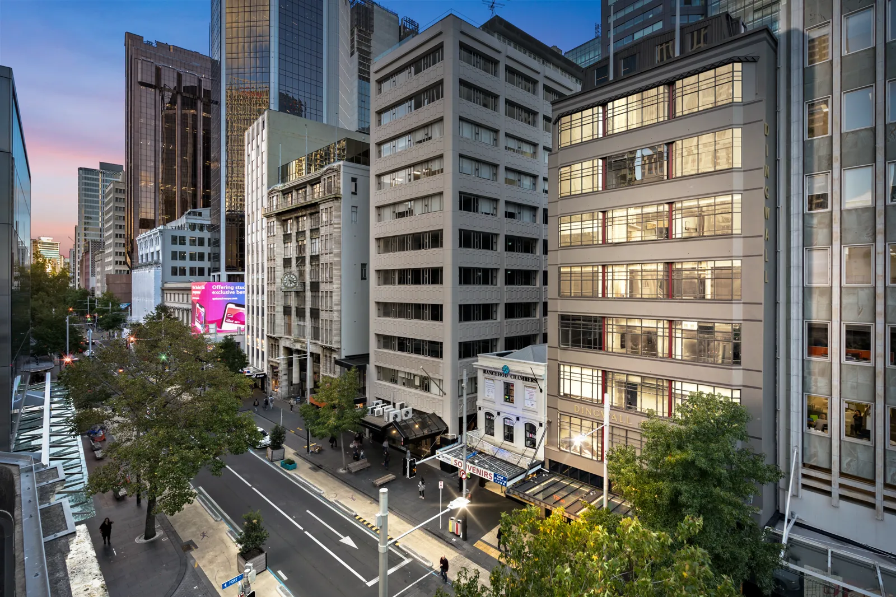

Perth virtual staging & photo editing
Virtual Staging Perth
Furnish an empty room, declutter an occupied one, or turn an afternoon exterior into twilight — added to any shoot and delivered with your photos.
Virtual staging in Perth costs $25 per image with Baker Production, added to any photography booking and delivered with your photos. Decluttering and object removal are $5 per image and day-to-dusk conversion is $5 per image. Every enhanced image is marked as virtually enhanced. Prices include GST.
Furnish an empty room without the styling bill
An empty room does not photograph as potential — it photographs as small. Buyers cannot scale a space without something in it to scale against, which is why vacant listings consistently under-perform identical furnished ones. Physical styling solves that and costs thousands. Virtual staging solves most of it for a fraction of the cost.
We do it in-house, as part of the shoot. Tell us which rooms and the style you want when you book, and the staged images come back in the same gallery as the rest of your photos. If something is not right, we fix it.
It does more than furniture. Decluttering clears an occupied room without stripping it bare. Object removal takes out the bins, the cords and the car in the driveway. Day-to-dusk turns a flat afternoon exterior into twilight. Rain cleanup rescues a shoot that happened on the wrong Perth winter morning — drying the paving and lifting the sky while leaving genuine stains and cracks exactly where they are.
What we can do
Per image, added to your shoot.
- Virtual staging — furnish an empty room
- Decluttering — tidy an occupied room without stripping it
- Object removal — bins, cords, cars, clutter
- Day-to-dusk — daytime exterior to twilight
- Rain & wet-weather cleanup — dry the paving, lift the sky
- Exterior cleanup — greener lawns, cleaner driveways
Before and after



More recent work in the Baker Production gallery. Staging starts with a clean source photo — book one with our real estate photographer in Perth. Before you list, read our guide to virtual staging disclosure.
What it costs
| Service | Price (inc. GST) |
|---|---|
| Virtual stagingFurnish an empty room. Handled as part of the booking. | $25/image |
| DeclutteringObject and clutter removal, handled for you. | $5/image |
| Day to duskConversion handled for you. | $5/image |
All prices include GST. Prices last checked 22 October 2026.
Disclosure — how we keep you safe
Australian Consumer Law prohibits misleading or deceptive conduct and false representations about property. A virtually staged photograph that a buyer reasonably reads as a photograph of the room as it stands is exactly the kind of representation that gets an agency into trouble.
So we mark it for you. Every enhanced image comes back with a clear disclaimer baked into the bottom corner — not a line in the fine print that gets lost when the image is uploaded to a portal. Your agency may also have its own wording requirement; use both.
This is general information, not legal advice. If you are unsure how disclosure applies to a particular campaign, check with your licensee or REIWA.
Where we shoot
Baker Production covers the Perth metropolitan area — from Alkimos in the north to Rockingham in the south, the coast through to the Perth Hills. Travel inside that area is included in the price.
Outside that range — Mandurah, Peel, the South West, regional WA — call 0466 789 522 and ask. We travel for the right job.
Virtual staging in Perth — common questions
Add staging to your next shoot.
$25 an image, delivered with your photos, and every result marked as virtually enhanced.